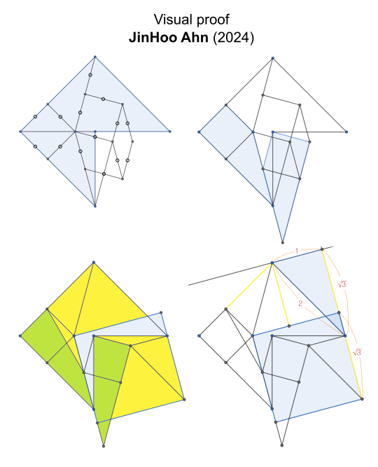

MITRE DISSECTIONS
HISTORY
In dissection puzzle, a polygon is dissected into the fewest possible pieces that can be rearranged to form another polygon.
The earliest known descriptions of dissection puzzles are from the time of Plato (427–347 BCE) in Ancient Greece, and involve the challenge of turning two equal squares into one larger square using four pieces.
[Wikipedia]
Another ancient dissection puzzle is square trisection, where the task is to dissect a large square into the fewest possible polygons that can be assembled to form three identical squares. The first 9-piece solution dates back to around 1000 AD, followed by an 8-piece solution around 1400 AD, a 7-piece solution in 1877, and the first 6-piece solution in 1891.
[Blanvillain, 2010]
The dissections of regular polygons into other regular polygons is well-studied field. The best-known dissections have been documented and stored by Theobald.
[Theobald web]
Mitre puzzle
Dissection puzzles gained popularity in the late 19th century when newspapers and magazines started featuring them. Puzzle creators like Sam Loyd (US) and Henry Dudeney (UK) frequently included dissection puzzles in their puzzle columns.
[Wikipedia]
Early version of the mitre puzzle dates back to beginning of 19th century. In that version a mitre shape had to be cut into four parts of the same size and shape. That is actually impossible to achieve with exact measures and connected pieces. Intended solution used corner connected pieces.
[Dudeney, 1917]
In 1901 Sam Loyd presented a variation of the mitre puzzle where one has to divide mitre shape into fewest possible pieces which will fit together and form a square. He also published his 4-piece solution to the puzzle.
[Loyd, 1901a], [Loyd, 1901b]
In 1911 Henry Dudeney showed that Loyd's 4-piece solution was faulty and presented his own 5-piece solution.
[Dudeney, 1911a] ,
[Dudeney, 1911b]
Since then few new 5-piece-solution has been presented by several individuals.
[Wei]
The 4-piece solution has been eluded all attempts to find itself but recently (May 2024) with help of software it has been found. In the solution there is one piece (green) that is flipped over and there is some debate whether this is allowed or not.

PROOF

SOFTWARE
(Software algorithms.)
5-PIECE SOLUTIONS
REFERENCES
| [Blanvillain, 2010] | Blanvillain, Christian; Pach, Janos (2010). "Square Trisection". |
| [Dudeney, 1911a] | Dudeney, Henry Ernest (1911). "Perplexities". The Strand Magazine Vol. 41. (p. 746). |
| [Dudeney, 1911b] | Dudeney, Henry Ernest (1911). "Perplexities". The Strand Magazine Vol. 42. (p. 108). |
| [Dudeney, 1917] | Dudeney, Henry Ernest (1917). Amusements in mathematics (p. 333). |
| [Frederickson, 1997] | Frederickson, Greg Norman (1997). Dissections: Plane & Fancy. |
| [Hoffman, 1893] | Hoffman (1893). Puzzles old and new. |
| [Loyd, 1901a] | Loyd, Sam (Sunday, July 21, 1901). The Philadelphia Inquirer (p. 33). |
| [Loyd, 1901b] | Loyd, Sam (Sunday, August 11, 1901). The Philadelphia Inquirer (p. 31). |
| [Perigal, 1891] | Perigal, Henry (1891). Geometric Dissections and Transformations. |
| [Theobald web] | Theobald, Gavin (2024, May 31). "Geometric Dissections". |
| [Wei] | Wei, Fu (2024, May 31). "Origami idea solves century-old math problem". |
| [Wolfram] | Theobald, Gavin; Weisstein, Eric W. "Dissection". |
| [Wikipedia] | Wikipedia: "Dissection puzzle". |